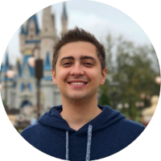

NEXTAGE

Formado em Gastronomia pela Universidade Anhembi Morumbi, Alanzoka estabeleceu-se como um youtuber no ano de 2011 em seu canal "EDGE", sigla para Electronic Desire Gamers Entertainment. Seu primeiro vídeo foi de Minecraft, mas foram os jogos de co-op e terror, como Slender: The Eight Pages, Amnesia e Dead Space 2, que impulsionaram seu reconhecimento em 2012. Após renomear seu canal para "alanzoka", começou sua carreira na Twitch, gravando vídeos de Five Nights at Freddy's e Fortnite.
Em 2015, participou da 1ª temporada do torneio Legends of Gaming Brasil da MTV juntamente com outros youtubers e, em 2016, integrou a seleção brasileira de Overwatch, atendendo pelo nickname
"Nextage"
-Nextage bb